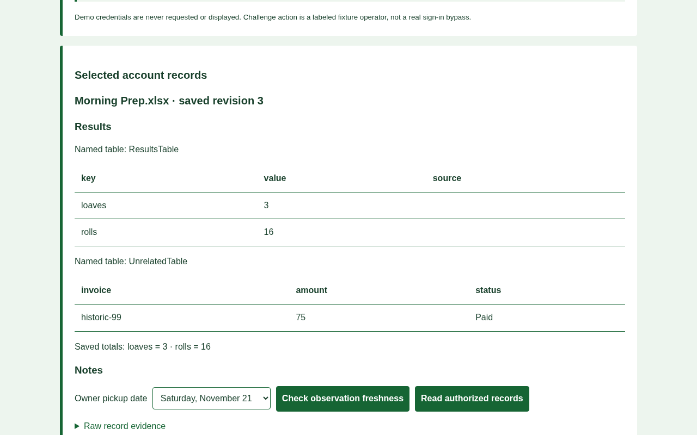

01 / Bakery prep
Tomorrow, ready to bake
Turn paid orders and the fixture operator’s pickup choice into a prep workbook.
loaves: 3 · rolls: 16
Recorded browser captures
3 raw clipsShort, separate page captures, not a complete human-paced walkthrough. Original durations shown. Slow playback changes viewing speed only.
Open individual clips (3)
Saved result
Full size ↗

Original screenshot from this run. A separate fresh-browser readback also passed.
View independent observer screenshot ↗
Inspect exact outcome & evidence 14 passed checks
Exact verification result
- loaves
- 3
- rolls
- 16
Run: bakery-prep-ab95b5d07c1a
Recorded normal scenario. Results below come from the archived verification JSON, not estimates.
Passed independent checks
- expected result
- actual workbook row
- actual table cells
- actual table totals
- unrelated table rows preserved
- unrelated preserved
- single case row
- saved revision matches
- historical notes preserved
- pack size total
- owner choice applied
- independent browser readback
- checkpoint source readback
- exact artifact delivery